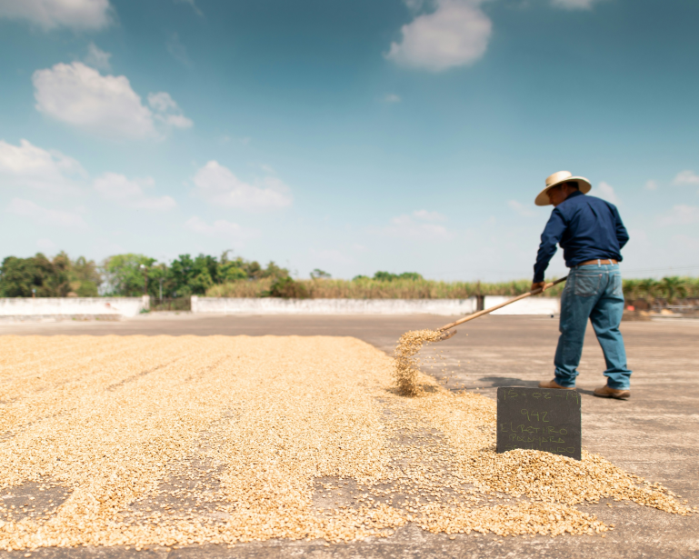
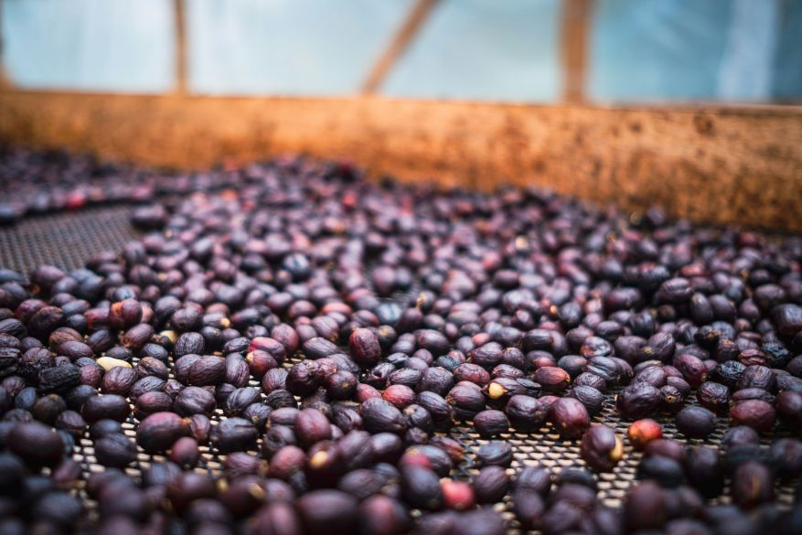

Have you ever thought of where a coffee bean comes from? While it’s often overlooked when thinking about coffee, the coffee bean is the interior seed in a cherry-like fruit. One of the biggest factors in the taste of coffee is how it is processed from cherry to dried bean. The choice by the producer in how to remove the coffee bean from the cherry is a combination of many factors. Climate, technology, knowledge, and market trends can all influence a producer’s choice in how to process the coffee; outside of just desired flavor.
The types of processing generally falls into two categories:
Wet-Process (Washed) or Dry-Process (Natural)

The Wet-Process (Washed) is the most common in specialty coffee. This process involves removing the beans from the cherry-flesh, then soaking the beans to soften the mucilage before it too is removed from the bean. The beans are then dried on patios. What results is a very clean tasting bean that can provide the unique origin-specific flavors.

The Dry-Process (Natural) is slightly less common than washed, but is a simpler method requiring less specialized machinery. Freshly picked coffee is dried on raised beds or patios before the bean is removed. The extra time that the fruit is in contact with the bean during drying is what gives these types of coffees a more fruity taste; some even getting a wine or fermented note.
Another less common processing method is called the Honey or Pulped-Natural process. This is sort of an in-between processing method that keeps some of the pulp on the bean during drying. Flavors produced from this method include a syrupy sweetness, or balance acidity.
While this is not an exhaustive list, and just the beginning of a discussion around processing methods, I hope it can provide a baseline of knowledge when choosing coffees to try. If you prefer clarity, go for a washed coffee. Want to try something exotic, go for a natural. Interested in experiencing something new, try a honey process.
— Mitchell